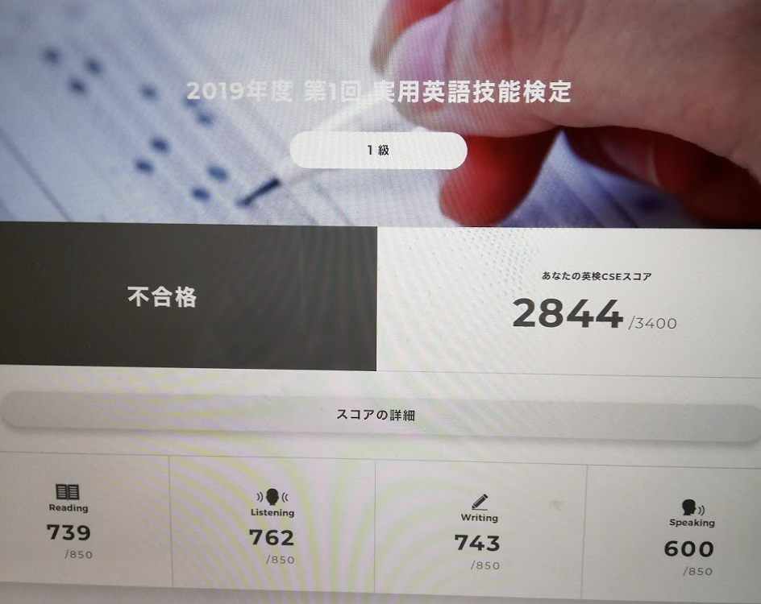

Table of Contents
1 はじめに
ITの新しい技術情報は大抵英語で書かれ、しばらくしてから、一部が翻訳されて 日本に入ってきます。日本語に翻訳された技術書は版が古いことがよくあります。 良書でもマイナーな分野の技術書は、そもそも翻訳されないことが多いのです。
日本にいて、日本で仕事をしているエンジニアにとっても、英語ができることは、 プラスになります。
2 筆者の英語力
先日の記事でも書きましたが、私は去年、英検1級2次試験の面接で落ちています。 
いきなり不合格の恥ずかしい写真で恐縮ですが、一次試験は比較的余裕を持って 合格しています。(スピーキングの合格点は602点でした。。) TOEICは10年以上前になりますが、最後に受けたIPテストでは930点くらいでした。その他の英語のテストは受けていません。
現在は2回目の海外出向でアメリカに来ており、Product Ownerとして現地開発チームに入り込んでいます。リスニングとスピーキングが元々苦手だったこともあると思いますが、ミーティングにおいて議論の流れに乗って発言できるようになったのは、ごく最近のことです。
3 英語のメリット
3.1 より多くの情報が入手できる
英語で技術情報を発信している人の数は英語ネイティブのアメリカ人や イギリス人たちだけではありません。ヨーロッパの技術者、インド人技術者 達も公用語である英語で情報を発信しています。英語で書かれた技術情報の 量は日本語よりも圧倒的に多いのです。
3.2 最新の情報が入手できる
新しい技術は英語圏で生まれることが多く、仮にそうでなくても、公用語の 英語で表現されてはじめて世界中に普及します。日本語の技術情報は多くの 場合英語からの翻訳から始まるため、どうしてもワンテンポ遅れてしまいます。
最新の情報は英語で書かれたものにあたるしかないのです。
3.3 一次情報は英語で書かれている
同様に、一次情報にあたりたい場合は、英語しか選択肢がありません。 エンジニアであれば一次情報にアクセスすることの重要性は理解されていると思いますが、日本語だとそもそも一次情報が無い場合がほとんどです。例えばRFCには日本語版もありますが、これらはあくまで翻訳です。
3.4 世界を相手にできる
英語は事実上世界の公用語であるため、英語で表現されて初めて世界で 認知されるスタート地点に立つことができます。英語が使えることが、 世界で活躍するための前提条件になります。
4 エンジニアに必要な英語力
4.1 何の能力が必要か
英語力と一言で言っても、リーディング、リスニング、ボキャブラリー、 ライティング、スピーキングのどの能力をどれだけ身につけるべきでしょうか。
4.1.1 TOEICで言うと
私の経験上、TOEICで800点を超えるようになると、英語で書かれた生の情報を 吸収できるようになってくるようです。もちろん800点で十分というわけ ではありませんが、いったん翻訳する、辞書を引きまくる、などのオーバーヘッド があまり生じずに、英語の情報を利用できるようになるのが800点という意味 です。そのため、まずはTOEIC 800点が一つの目標になります。
「英語ができる」目安としてTOEIC 900点という風潮があるようですが、私は 900点を目指すことは勧めません。そのためにかかる労力と得られる効果が 釣り合わない(コストパフォーマンスが悪い)ためです。
4.1.2 リーディング
日本にいるエンジニアに一番必要なのはリーディング力と考えます。 技術的な問題に出くわしたとき、ネットで調査すると思いますが、 ニッチな問題になればなるほど、英語の情報しか無い場合が増えてい きます。日本人は一億人、アメリカ人は2億人以上、ヨーロッパ数億人、 インド人は13億人。英語の情報が質、量共に圧倒的であることは明らかです。
リーディングでは、比較的簡単な英文を大量に処理できる力が役に立ちます。 技術文書の英語は難しくありません。高校で学ぶ程度の英語が使えれば よいでしょう。
4.1.3 リスニング
リスニング力はリーディングほど重要でないように思います。アメリカ人 等と一緒に働くというなら、リスニングができないと話になりませんが、 日本のエンジニアがネイティブの発言をリアルタイムに聞く機会がどれ ほどあるでしょうか。
リスニングは、Youtubeの技術説明ビデオが理解できる程度あれば十分 でしょう。逆に、これらの解説ビデオが理解できないようであれば、 リスニング力の底上げをすべきです。
4.1.4 ボキャブラリー
自分に必要な英文ドキュメントを読んでいて、あまりに知らない単語が たくさん出てくるようなら、ボキャビルすることは有効です。ボキャビル するときには一気に500〜1000語増やすと、実感として効果が感じられます。
必要性を感じないのにボキャビルをすることは、大して意味が無いように 思います。使わない単語は忘れていきますので。
4.1.5 ライティング
これは人によると思います。今後OSS活動などで、日本人以外とやりとり をしていきたい場合は、相手が読んで理解できる程度の最低限の ライティング力を付けなくてはいけません。
日本にいて、特に外国人と関わることがないなら、ライティング力は ほとんどいりません。
なお、私はいまでも変な文法で英文を書いています。意味はほぼ100％ 通じる英語が書けますが、ネイティブから見て違和感を感じる英語に なっているようです。
4.1.6 スピーキング
ライティング以上に、スピーキング力は必要ありません。 正しい英語を話すよりも、問題は中身です。プレゼンでは、練習すれば いいのです。あなたが聞くに値する内容を持っているなら、相手は 聞こうと努力してくれます。
4.2 勉強方法
4.2.1 リーディングの学習
逆説的に聞こえるかもしれませんが、リーディング力は英文を読む量に 比例します。よって、ひたすら読めばいいのです。辞書を引きながら でも内容が取れるようであれば、とにかく読みます。
問題は、読んでもさっぱり理解できない場合です。このような場合は
- 知らない単語が1行に2, 3個以上でてくる
- 英文の構造が理解できない
- 英文を読むことに慣れていない
ことが考えられます。
知らない単語がたくさん出てくるようであれば、ボキャビルが有効です。 ボキャビルのやり方は後述します。
英文の構造が全く理解できない場合は、文法をやり直した方がよさそう です。自分のレベルに合う文法の本を買って、腰を落ち着けて取り組む とよいと思います。
英語で読んで意味がとれず、結局全文翻訳してやっと理解できる場合は、 英文を読むことに慣れていないことが考えられます。翻訳できるので あれば、あとは慣れの問題です。簡単な英文を繰り返し読み、英語を 英語で理解できる(直読直解)ようにしていきます。
直読直解の練習として、英文の音読が有効です。意味が思い浮かぶよう になるまで繰り返し音読します。
4.2.2 リスニングの学習
ディクテーションが有効です。逆に、リスニング力を付けるために 効果が無い方法は、BGMのように英語を流しっぱなしにすることです。
ディクテーションは、テキストを見ずに聞いた英文を書き留めていき ます。聞き取れない部分は何度も聞きます。これ以上無理、となったら テキストを見て、なんと言っていたのか理解します。
そしてここが重要なのですが、更に何度も繰り返し聞き取れなかった 部分の英語を聞いて、聞き取れなかった音を意識的に体に覚え込ませ ていきます。この後半ステップをする、しないでディクテーションの 効果に差が出てしまいます。
ある程度ディクテーションすることに慣れてきたら、書き留める ステップをスキップしてもよいでしょう。
なお、読んで理解できない英文は聞いても理解できません。 リーディングの勉強と並行して行いましょう。
4.2.3 ボキャビル
ボキャビルはボキャブラリービルディングの略(和製英語)です。 1行に知らない単語が2, 3個以上でてくるようだと、その英文を読む ことは厳しいです。そのような状況が続く場合は、単語集を使って まとめてボキャビルすると効果が感じられます。
ボキャビルのやり方は英語上達完全マップの「サイクル回し」方式が とても参考になります。私も英検1級受験に際してお世話になりました が、それまでにやってきたどのボキャビル方法よりも効果的でした。
4.2.4 ライティングの学習
英文をたくさん読んでいると、少しずつライティングもできる ようになってきます。通じる英語を書くには、正しい英文のパターン が頭の中にできている必要がありますが、このためには大量に読む ことが自然かつ有効です。
リーディングを続けていると語感が身につき、直感的に正しい英語 と間違った英語が区別できるようになります。
4.2.5 スピーキングの学習
スピーキング力は、話した量に比例します。Skype英会話でよい講師 を見つけて、ひたすらしゃべる訓練をするとよいでしょう。
Skype英会話に抵抗がある場合には、この本を薦めます。
入門用もあります。いきなり中、上級用に手を出さないようにしてください。 この本では、英語を体で覚えるための繰り返しトレーニングを行います。 苦痛ですが、効果的です。
4.3 学習教材について
4.3.1 NHKのラジオ講座
NHKのラジオ講座は非常によくできています。レベル別に講座がある ので、万人に勧められると思います。何か一つ英語教材を挙げるよう に言われたら、私はNHKのラジオ講座を挙げます。
ラジオ講座を効果的に使うためには、受け身でなく、プロアクティブ に取り組む必要があります。放送の時間に聞くだけでは不足です。 繰り返し復習しましょう。ラジオ講座の毎回のテキストは比較的 短く、よい英文が凝縮されているため、音読するのに適しています。
私の場合、中上級編と上級編(当時の「やさしいビジネス英語」)を選び、 1週間分の本文を毎日10回ずつ音読しました。
4.3.2 英会話教室
英会話教室はコストパフォーマンスが悪いので勧めません。
4.3.3 Skype英会話
最近では英会話教室よりもSkype英会話が主流でしょうか。 私はNativeCampとiTalkiについてしか知りませんが、前者は講師の 英語の質が悪いと感じました。しかし非常に安価なため、量をこなす にはよいかもしれません。
iTalkiは講師が作成した自己紹介動画を見て(英語を聞いて)、 習いたい講師を選択できるために、NativeCampよりもお勧めです。 私は、子供向けのライティングを見てくれる講師をiTalkiで 探しましたが、まれに安価かつ非常に優秀な講師が見つかります。
5 英語での技術情報の探し方
5.1 Youtube
何か新しい技術について知りたいとき、Youtubeの入門動画を見る のがお勧めです。例えばKubernetesって何だろうと思ったら、 "kubernetes" "101"のキーワードでYoutube検索すると、 こんな動画がヒットします。"101"は「入門編」のような意味で、 実際にアメリカではよく使う表現です。
入門動画は、何かの概念を素早く理解するために優れた手段です。 英語の技術系ブログは概念図を示さずに、だらだらと英文で説明する傾向があり、初心者には敷居が高いと思います。
日本ではqiitaの技術紹介記事がとても役に立ちますが、動画で 概要をつかんでからqiita記事にあたるのが効率的と思います。
5.2 検索方法
知りたいことのキーワードをなるべく具体的に検索することで、 欲しい情報がヒットする確率が上がります。
例えば、Pythonのライブラリがエラーを吐いた時には、ライブラリ 名とエラーのポイントとなる部分を丸々コピペして検索すると、 同じ問題で相談しているStack OverflowやStack ExchangeのQ&A記事 が見つかることが多いです。
欲しい情報の書いてある文脈を想定し、具体的な検索キーワードを複数指定することがコツです。一般名詞よりも固有名詞を使いましょう。そして、指定検索ワードの試行錯誤をしながら欲しい情報に近づくように絞り込んでいきます。
5.3 技術書
技術書は翻訳版よりもオリジナルの英語版を読むのがおすすめです。 翻訳のまずさで意味が伝わらなくなっているケースはよくあります。 日本語版は版が古いことも多いです。
書籍によっては、著者が無償でPDF版を公開しているものもあります。 書籍名、著者名に"PDF"のキーワードで検索すると出てきたりします。 ただし、違法に無断公開している場合もありますので、そのような 情報にはアクセスしないようにしましょう。
6 終わりに
日本のエンジニアの中には、英語が不得意な方も多いと思いますが、 技術力と英語力を両方持っているととても有利になりますので、 是非とも使えるレベルの英語力を身につけていただければ、と思います。